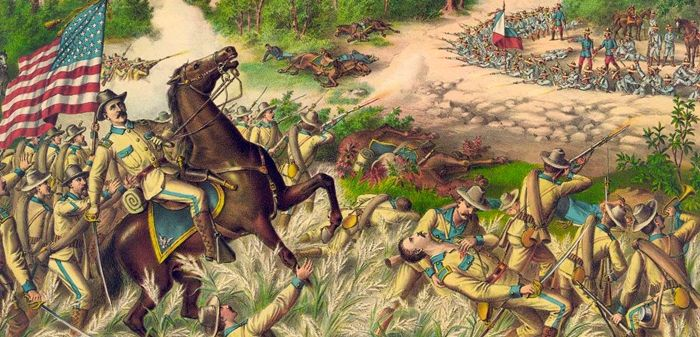
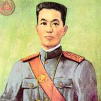
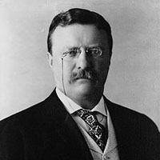

The decision by U.S. policymakers to annex the Philippines was not without domestic controversy. Americans who advocated annexation evinced a variety of motivations: desire for commercial opportunities in Asia, concern that the Filipinos were incapable of self-rule, and fear that if the United States did not take control of the islands, another power (such as Germany or Japan) might do so. Meanwhile, American opposition to U.S. colonial rule of the Philippines came in many forms, ranging from those who thought it morally wrong for the United States to be engaged in colonialism, to those who feared that annexation might eventually permit the non-white Filipinos to have a role in American national government. Others were wholly unconcerned about the moral or racial implications of imperialism and sought only to oppose the policies of President William McKinley’s administration.
After the Spanish-American War, while the American public and politicians debated the annexation question, Filipino revolutionaries under Aguinaldo seized control of most of the Philippines’ main island of Luzon and proclaimed the establishment of the independent Philippine Republic. When it became clear that U.S. forces were intent on imposing American colonial control over the islands, the early clashes between the two sides in 1899 swelled into an all-out war. Americans tended to refer to the ensuing conflict as an “insurrection” rather than acknowledge the Filipinos’ contention that they were fighting to ward off a foreign invader.

Emilio AguinaldoThere were two phases to the Philippine-American War. The first phase, from February to November of 1899, was dominated by Aguinaldo’s ill-fated attempts to fight a conventional war against the better-trained and equipped American troops. The second phase was marked by the Filipinos’ shift to guerrilla-style warfare. It began in November of 1899, lasted through the capture of Aguinaldo in 1901 and into the spring of 1902, by which time most organized Filipino resistance had dissipated. President Theodore Roosevelt proclaimed a general amnesty and declared the conflict over on July 4, 1902, although minor uprisings and insurrections against American rule periodically occurred in the years that followed.
The United States entered the conflict with undeniable military advantages that included a trained fighting force, a steady supply of military equipment, and control of the archipelago’s waterways. Meanwhile, the Filipino forces were hampered by their inability to gain any kind of outside support for their cause, chronic shortages of weapons and ammunition, and complications produced by the Philippines’ geographic complexity. Under these conditions, Aguinaldo’s attempt to fight a conventional war in the first few months of the conflict proved to be a fatal mistake; the Filipino Army suffered severe losses in men and material before switching to the guerrilla tactics that might have been more effective if employed from the beginning of the conflict.

President Theodore RooseveltThe war was brutal on both sides. U.S. forces at times burned villages, implemented civilian reconcentration policies, and employed torture on suspected guerrillas, while Filipino fighters also tortured captured soldiers and terrorized civilians who cooperated with American forces. Many civilians died during the conflict as a result of the fighting, cholera and malaria epidemics, and food shortages caused by several agricultural catastrophes.
Even as the fighting went on, the colonial government that the United States established in the Philippines in 1900 under future President William Howard Taft launched a pacification campaign that became known as the “policy of attraction.” Designed to win over key elites and other Filipinos who did not embrace Aguinaldo’s plans for the Philippines, this policy permitted a significant degree of self-government, introduced social reforms, and implemented plans for economic development. Over time, this program gained important Filipino adherents and undermined the revolutionaries’ popular appeal, which significantly aided the United States’ military effort to win the war.
In 1907, the Philippines convened its first elected assembly, and in 1916, the Jones Act promised the nation eventual independence. The archipelago became an autonomous commonwealth in 1935, and the U.S. granted independence in 1946.